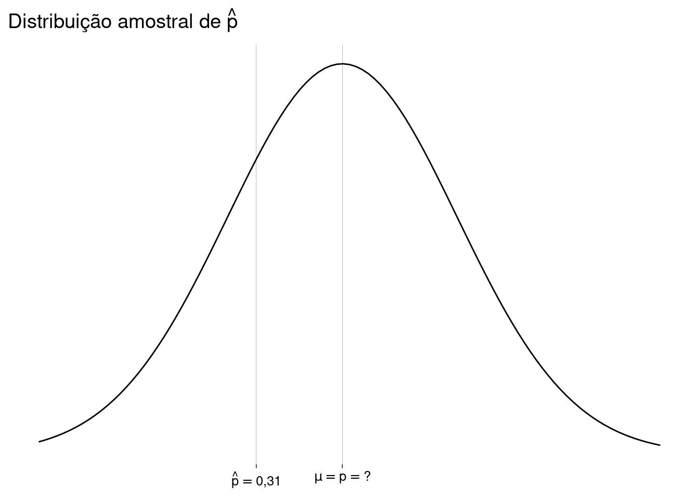
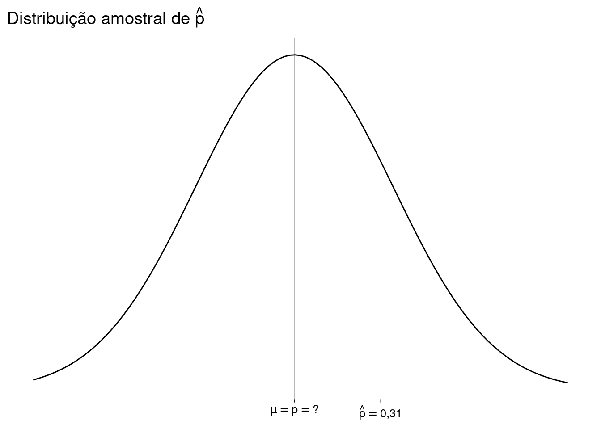
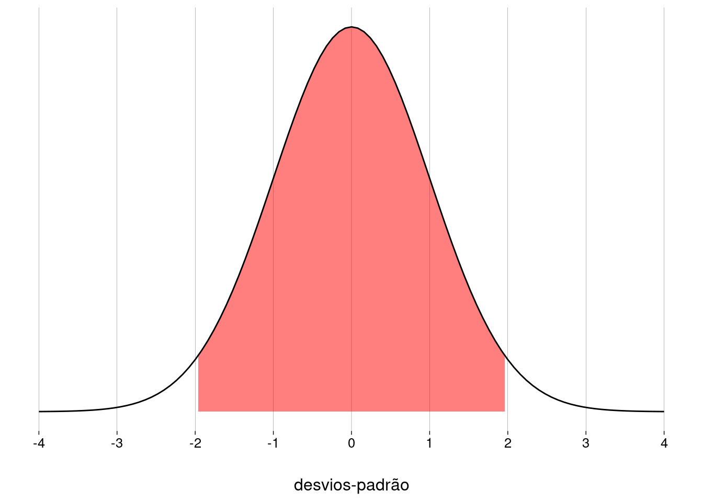
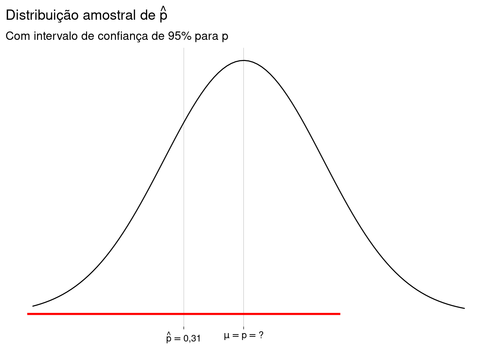
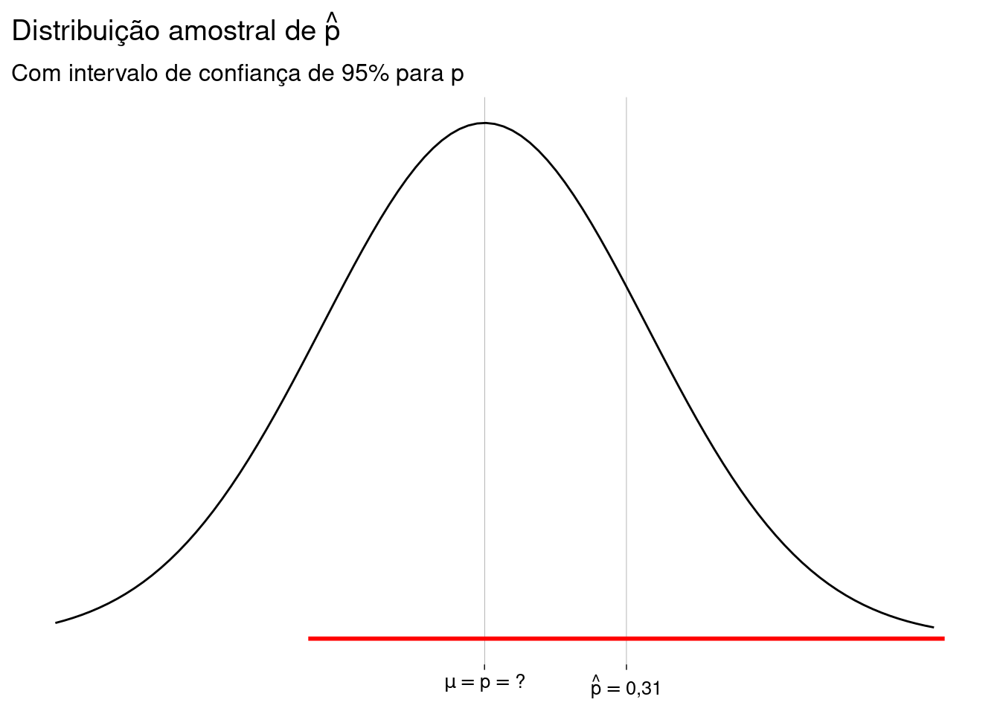
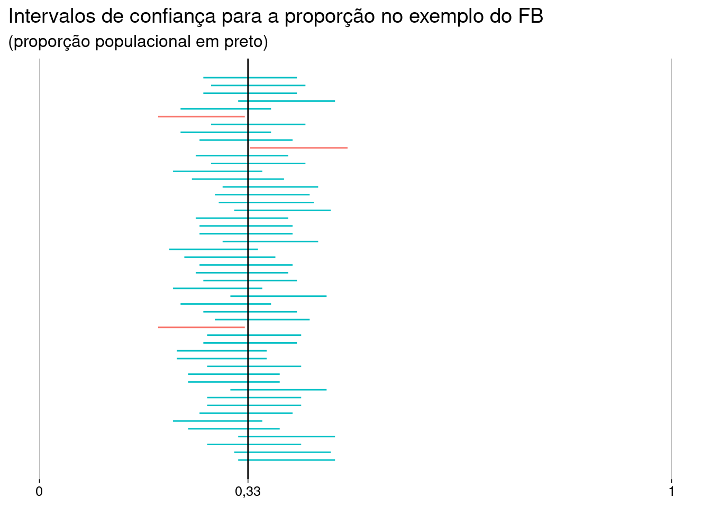
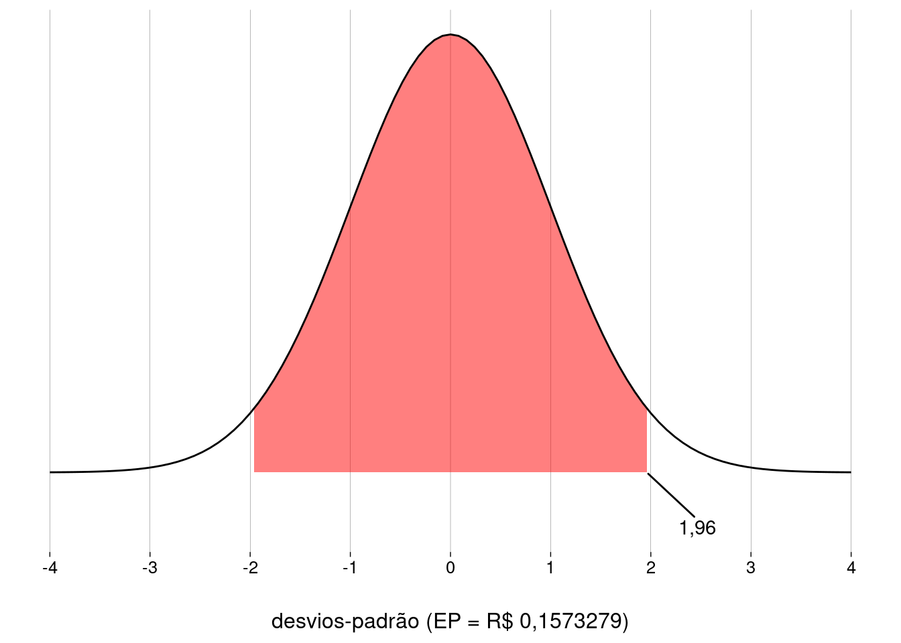
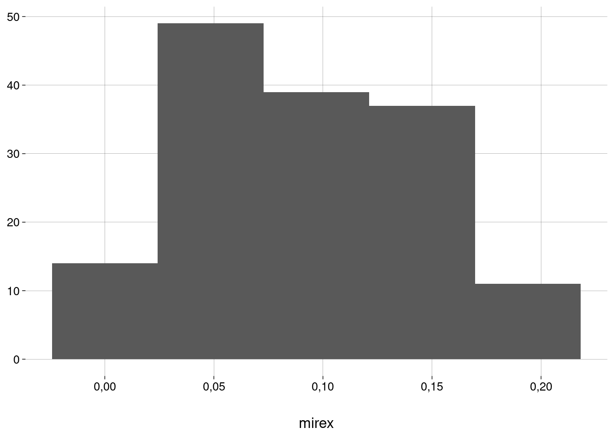
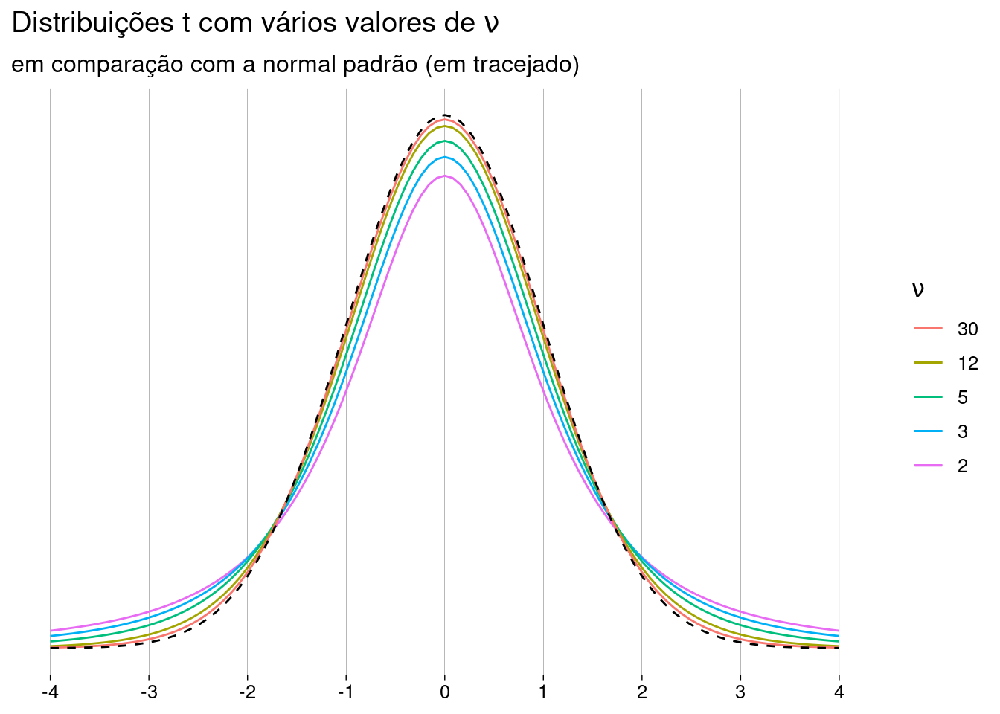
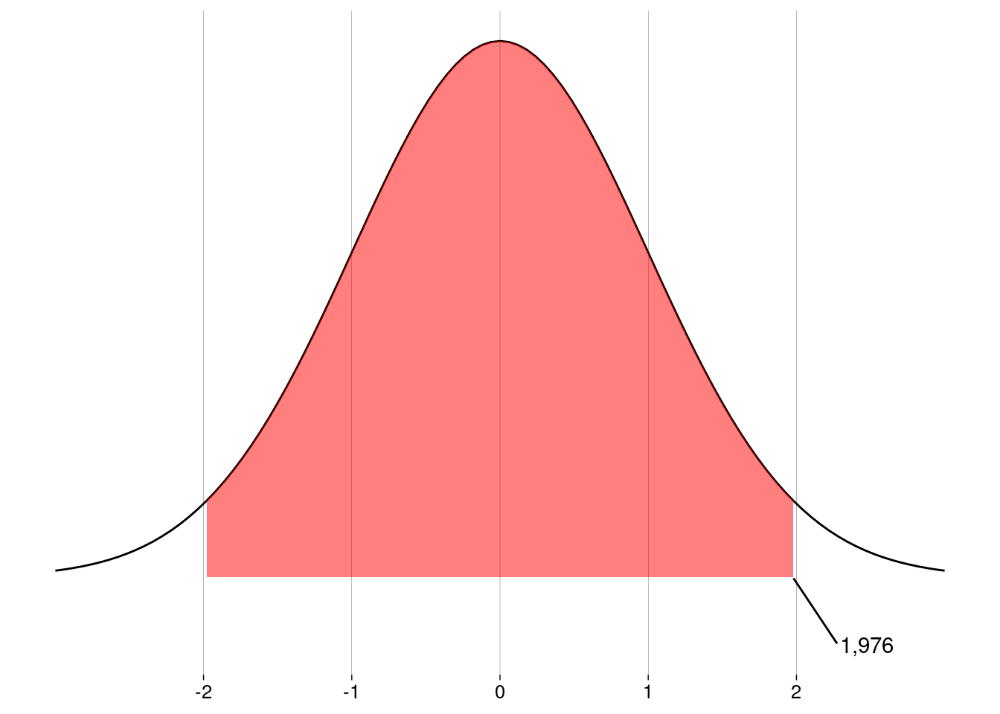

Capítulo 12 Intervalos de confiança
12.2 Intervalos de confiança para a proporção
12.2.1 Exemplo: quem posta no FB diariamente?
Teoria
Uma pesquisa com uma amostra aleatória de \(156\) jovens descobriu que \(48\) deles postam no FB todo dia.
-
Qual a proporção amostral de jovens que postam no FB diariamente?
p_chapeu <- 48/156 p_chapeu## [1] 0,3076923A resposta é \(\hat p = 0{,}31\), ou \(31\%\).
Perceba que é costume chamar a proporção amostral de \(\hat p\).
Isto quer dizer que a proporção populacional é \(0{,}31\)? Não necessariamente, mas esta parece ser uma boa estimativa.
Existe uma margem de erro. Como computá-la? Usando o TCL!
-
Primeiro, verificamos que as condições para usar o TCL são satisfeitas:
De fato, \(n > 30\).
A nossa amostra é aleatória (podemos supor).
Os indivíduos da amostra são independentes (podemos supor).
O tamanho da amostra é menos do que \(10\%\) da população (podemos supor).
Há pelo menos \(10\) sucessos e pelo menos \(10\) fracassos na amostra.
A proporção amostral \(\hat p\) varia para cada amostra; logo, \(\hat p\) é uma variável aleatória e tem uma distribuição de probabilidade: a distribuição amostral da proporção.
O TCL diz que a distribuição de \(\hat p\) é normal, com média \(p\) (a proporção populacional verdadeira, que nós nunca vamos descobrir) e desvio-padrão \(\sqrt{\frac{p(1-p)}{n}}\) (que também nunca vamos descobrir, mas que podemos estimar usando \(\hat p\) no lugar de \(p\)).
-
Vamos supor que \(\hat p \neq p\). Eis, então, as duas situações possíveis:

-
Agora, o desfecho. Preste bem atenção. Nada nas mangas.
-
Em uma distribuição normal com média \(\mu\) e desvio-padrão \(\sigma\), sabemos que \(95\%\) da probabilidade está entre \(\mu - 1{,}96\sigma\) e \(\mu + 1{,}96\sigma\).
 -
Na nossa distribuição amostral de \(\hat p\), o desvio-padrão é o erro-padrão
\[ EP = \sqrt{\frac{\hat p(1-\hat p)}{n}} \]
Então, em \(95\%\) das amostras possíveis, \(\hat p\) vai estar a \(1{,}96\cdot EP\) ou menos de distância da proporção populacional \(p\).
Nossa amostra é uma destas \(95\%\) das amostras possíveis? Não sabemos. Na verdade, como nossa amostra foi aleatória, há \(0{,}95\) de probabilidade de que sim.
Ou seja, há \(0{,}95\) de probabilidade de que nosso \(\hat p\) esteja a \(1{,}96\cdot EP\) ou menos de distância da proporção populacional \(p\).
-
Daí, podemos dizer, com \(95\%\) de confiança, que a proporção populacional \(p\) está no intervalo
\[ [\quad \hat p - 1{,}96 \cdot EP\quad,\quad \hat p + 1{,}96 \cdot EP\quad] \quad=\quad [\quad0{,}24 \quad,\quad 0{,}38\quad] \]
-
-
Eis os desenhos para as duas situações possíveis:

O que quer dizer \(\;95\%\) de confiança?
Quer dizer que não temos certeza de que nossa amostra está dentre aquelas cuja proporção amostral \(\hat p\) está a \(1{,}96\) desvios-padrão ou menos de distância da proporção populacional \(p\).
Existe \(0{,}05\) de probabilidade de que nossa amostra tenha sido “ruim”. Neste caso, nosso intervalo de confiança está errado.
Ou, dito de outro modo, se repetirmos este experimento com \(100\) amostras diferentes, o intervalo de confiança calculado vai conter a proporção populacional em \(95\) das vezes.
É importante perceber que \(95\%\) não é a probabilidade de \(p\) estar no intervalo, pois \(p\) é um valor fixo, sem qualquer incerteza, que está (probabilidade \(1\)) ou não está (probabilidade \(0\)) no nosso intervalo de confiança.
Simulação
Vamos simular uma população de \(200\) mil valores booleanos:
FALSEsignifica que a pessoa não posta no FB todo dia,TRUEsignifica que a pessoa posta no FB todo dia.-
A proporção populacional \(p\) que posta todo dia tem um valor específico, que não vou revelar aqui. Na vida real, você não vai saber o valor de \(p\).
-
Vamos retirar uma amostra de \(156\) pessoas:
n <- 156 amostra <- sample(populacao, n) -
Qual a proporção de pessoas que postam todo dia (\(\hat p\))?
p_chapeu <- mean(amostra) p_chapeu## [1] 0,3012821 -
Vamos construir um intervalo de confiança de \(95\%\) para a proporção populacional \(p\):
-
O erro-padrão é
ep <- sqrt(p_chapeu * (1 - p_chapeu) / n) ep## [1] 0,0367346 -
Para \(95\%\), precisamos usar \(1{,}96\) como o número de desvios-padrão. A margem de erro será
margem <- 1.96 * ep margem## [1] 0,07199981 -
Os extremos do intervalo de confiança vão ser
p_chapeu + c(-1, 1) * margem## [1] 0,2292822 0,3732819
-
Será que este intervalo é bom? Será que a amostra que tomamos está naqueles \(95\%\) de amostras que ficam próximas da proporção verdadeira? Será que a proporção verdadeira está neste intervalo?
Na vida real, jamais saberíamos. Eu sei, porque fui eu que gerei a população, mas não vou falar ainda.
-
Vamos gerar mais \(50\) amostras e examinar os intervalos de confiança calculados a partir delas. Como estamos trabalhando com \(95\%\) de confiança, é razoável que \(2\) ou \(3\) dos intervalos — i.e., \(5\%\) de \(50\) — não capturem a proporção real:
n_amostras <- 50 # Gero uma lista, cada elemento uma amostra (um vetor) amostras <- replicate(n_amostras, sample(populacao, n), simplify = FALSE) #' Função para calcular o IC de uma amostra: retorna vetor de 2 elementos #' @param amostra Vetor booleanos #' @param conf Nível de confiança (default .95) #' #' @return Vetor numérico de 2 elementos: extremos do IC calculado #' montar_ic <- function(amostra, conf = .95) { p_chapeu <- mean(amostra) ep <- sqrt(p_chapeu * (1 - p_chapeu) / n) valor_critico <- - qnorm((1 - conf)/2) margem <- valor_critico * ep p_chapeu + c(-1, 1) * margem } # Calcular os ICs ICs <- amostras %>% map(~montar_ic(.x)) # Em quais deles a proporção verdadeira está no IC? ICs %>% map_lgl(~between(p, .x[1], .x[2]))## [1] TRUE TRUE TRUE TRUE TRUE TRUE TRUE TRUE TRUE TRUE TRUE TRUE TRUE ## [14] TRUE TRUE TRUE TRUE FALSE TRUE TRUE TRUE TRUE TRUE TRUE TRUE TRUE ## [27] TRUE TRUE TRUE TRUE TRUE TRUE TRUE TRUE TRUE TRUE TRUE TRUE TRUE ## [40] TRUE FALSE TRUE TRUE TRUE FALSE TRUE TRUE TRUE TRUE TRUE Verifique, no resultado acima, se a proporção verdadeira foi capturada aproximadamente \(95\%\) das vezes.
-
Uma visualização legal dos intervalos (veja no arquivo .Rmd como fazer):
 Ah, e agora você sabe qual era o valor de \(p\). Volte e veja se aquele primeiro intervalo de confiança era bom.
Pense e responda: os intervalos de confiança da figura acima têm todos o mesmo tamanho?
12.2.2 No geral
Situação
Você tem uma amostra de \(n\) elementos, com proporção amostral \(\hat p\).
Você quer construir um intervalo de confiança de \(c \%\) para a proporção populacional.
No nosso exemplo, \(n = 156\), \(\hat p = 48/156\) e \(c = 0{,}95\).
Verificar as condições para usar o TCL
A distribuição da população é normal e \(n \geq 10\)?
Caso a distribuição da população não seja conhecida, \(n \geq 30\)?
A amostra é aleatória, representativa da população?
Os valores da amostra são independentes entre si?
O tamanho da amostra é menos do que \(10\%\) da população?
Há pelo menos \(10\) fracassos e pelo menos \(10\) sucessos na amostra?
Calcular o erro-padrão da distribuição amostral de \(\hat p\)
\[ EP = \sqrt{\frac{\hat p (1 - \hat p)}{n}} \]
Calcular a margem de erro
-
Calcular o valor crítico \(z^\star\): o valor tal que a área abaixo da curva normal padrão entre \(-z^\star\) e \(z^\star\) seja de \(c\)
z <- -qnorm((1 - c)/2) No nosso exemplo,
z = -qnorm(0.025) = 1,96.-
A margem de erro vai ser
\[ ME = z^\star \cdot EP \]
Construir o intervalo
-
O intervalo de confiança será
\[ [\quad \hat p - ME \quad,\quad \hat p + ME \quad] \]
Outros níveis de confiança
No exemplo, usamos \(c = 95\%\).
O que acontece quando \(c = 90\%\)?
E quando \(c = 99\%\)?
Refaça o exemplo usando estes valores. Os intervalos ficam maiores? Menores? Qual a relação entre o nível de confiança \(c\) e o tamanho da margem de erro?
O que aconteceria se o nível de confiança fosse de \(100\%\)? Nós saberíamos a proporção populacional com certeza?
12.2.3 Escolhendo o tamanho da amostra
Exemplo
Você quer fazer uma pesquisa para saber a proporção \(p\) da população do seu estado que vai votar no candidato \(A\) na próxima eleição.
Você quer que a margem de erro seja de \(5\) pontos percentuais (i.e., \(ME = 0{,}05\)), com \(95\%\) de confiança.
Qual deve ser o tamanho \(n\) da sua amostra?
-
Pelo que vimos na seção anterior
\[ ME \quad=\quad z^\star \cdot EP \quad=\quad z^\star \cdot \sqrt{\frac{\hat p (1 - \hat p)}{n}} \]
-
Nós podemos isolar \(n\) e chegar a (confira)
\[ n = \hat p (1-\hat p) \left(\frac{z^\star}{ME}\right)^2 \]
Nós temos \(ME = 0{,}05\) e \(z^\star = 1{,}96\) (calculado a partir do nível de confiança).
E \(\hat p\)? Bem, o pior caso é o valor de \(\hat p\) que maximiza \(n\), que é \(\hat p = 0{,}5\).
Com estes valores, chegamos a
\[ n = 0{,}5 \cdot 0{,}5 \cdot \left(\frac{1{,}96}{0{,}05}\right)^2 = 384{,}16 \]
Conclusão: precisamos de uma amostra de pelo menos \(385\) pessoas.
Perceba que usamos o valor de pior caso para \(\hat p\). Se já tivermos uma estimativa para \(\hat p\) (obtida de uma pesquisa anterior, por exemplo), podemos usar esta estimativa e obter um valor menor para \(n\).
Perceba, também, que o tamanho da população não entra em jogo, a não ser para verificar que a amostra é menos do que \(10\%\) da população.
Calcule, por exemplo, qual seria o valor de \(n\) se já tivéssemos uma estimativa de \(\hat p = 0{,}3\).
12.2.4 Em R
Usando binom.test
-
Tudo isto já é feito pelo R base, com a função
binom.test, embora o algoritmo seja um pouco diferente, como você pode ver pelos resultados:bt <- binom.test(48, 156) bt## ## Exact binomial test ## ## data: 48 and 156 ## number of successes = 48, number of trials = 156, p-value = 0,000001748 ## alternative hypothesis: true probability of success is not equal to 0,5 ## 95 percent confidence interval: ## 0,2363644 0,3864933 ## sample estimates: ## probability of success ## 0,3076923 Esta função, além de computar o intervalo de confiança, faz um teste de hipótese (assunto de uma aula futura).
-
O valor de retorno desta função é uma lista:
str(bt)## List of 9 ## $ statistic : Named num 48 ## ..- attr(*, "names")= chr "number of successes" ## $ parameter : Named num 156 ## ..- attr(*, "names")= chr "number of trials" ## $ p.value : num 0,00000175 ## $ conf.int : num [1:2] 0,236 0,386 ## ..- attr(*, "conf.level")= num 0,95 ## $ estimate : Named num 0,308 ## ..- attr(*, "names")= chr "probability of success" ## $ null.value : Named num 0,5 ## ..- attr(*, "names")= chr "probability of success" ## $ alternative: chr "two.sided" ## $ method : chr "Exact binomial test" ## $ data.name : chr "48 and 156" ## - attr(*, "class")= chr "htest" -
Se você quiser só o intervalo de confiança:
bt$conf.int## [1] 0,2363644 0,3864933 ## attr(,"conf.level") ## [1] 0,95
Usando o pacote binom
Na verdade, existem muitos algoritmos diferentes para construir um intervalo de confiança para a proporção. Este artigo, de 2013, examina diversas alternativas.
-
O pacote
binomimplementa vários destes algoritmos através da funçãobinom.confint:library(binom) binom.confint(48, 156) %>% kbl(format.args = list(big.mark = '.')) %>% kable_paper( c('striped', 'hover'), full_width = FALSE )method
x
n
mean
lower
upper
agresti-coull
48
156
0,3076923
0,2404694
0,3841586
asymptotic
48
156
0,3076923
0,2352664
0,3801182
bayes
48
156
0,3089172
0,2377481
0,3814466
cloglog
48
156
0,3076923
0,2371200
0,3808746
exact
48
156
0,3076923
0,2363644
0,3864933
logit
48
156
0,3076923
0,2403194
0,3843959
probit
48
156
0,3076923
0,2393586
0,3834481
profile
48
156
0,3076923
0,2388119
0,3828426
lrt
48
156
0,3076923
0,2388381
0,3828590
prop.test
48
156
0,3076923
0,2376901
0,3873412
wilson
48
156
0,3076923
0,2406146
0,3840134
O algoritmo que descrevemos no exemplo é o
asymptotic.O algoritmo implementado por
binom.testé oexact.Leia as páginas de ajuda de
binom.teste debinom.confint.No RStudio, use
Code | Go To Function Definitionna chamada da funçãobinom.confintpara ver o seu código fonte. O métodoasymptoticé implementado nas linhas \(45\)–\(54\), usando variáveis definidas nas linhas \(28\)–\(32\). Lendo o código, você deve ser capaz de perceber que o que está acontecendo é o mesmo que fizemos no nosso exemplo.
12.4 Intervalos de confiança para a média
12.4.1 Exemplo: preço médio da gasolina
Em uma amostra aleatória de \(48\) postos de gasolina, a média do preço de um litro de gasolina comum foi R$ \(5{,}41\).
De pesquisas anteriores, sabemos que o desvio-padrão dos preços de gasolina na população de todos os postos é de R$ \(1{,}09\).
Vamos construir um intervalo de confiança de \(95\%\) para a média populacional do preço do litro da gasolina.
Teoria
-
Vamos identificar os dados:
Média amostral \(\overline x = 5{,}41\).
Tamanho da amostra \(n = 48\).
desvio-padrão populacional \(\sigma = 1{,}09\).
Nível de confiança \(c = 0{,}95\).
Verifique que as condições para aplicar o TCL são satisfeitas aqui.
-
O TCL diz que \(\overline X\) tem distribuição amostral normal com média \(\mu\) (a média populacional, que nunca vamos descobrir) e com desvio-padrão
\[ EP \quad=\quad \frac{\sigma}{\sqrt{n}} \quad=\quad \frac{1{,}09}{\sqrt{48}} \quad=\quad 0{,}16 \]
-
Eis a distribuição amostral da média, com os \(95\%\) centrais de probabilidade em destaque:
 O valor crítico correspondente a \(c = 0{,}95\) é \(z^\star = 1{,}96\).
A margem de erro \(ME\) vai ser \(z^\star \cdot EP = 0{,}31\).
-
O intervalo de confiança vai ser
\[ [\quad \overline x - 1{,}96 \cdot EP\quad,\quad \overline x + 1{,}96 \cdot EP\quad] \quad=\quad [\quad 5{,}10 \quad,\quad 5{,}72 \quad] \]
Em R
Este procedimento é chamado de teste z.
Este teste pressupõe que você sabe o desvio-padrão populacional; esta situação é tão rara que o R base não tem uma função para isso. Na verdade, o teste z é usado principalmente para fins didáticos.
-
Vamos carregar um pacote que implementa o teste z:
-
Esta função recebe o resumo (summary) da amostra e constrói o intervalo de confiança:
zsum.test(mean.x = 5.41, sigma.x = 1.09, n.x = 48)## ## One-sample z-Test ## ## data: Summarized x ## z = 34,387, p-value < 0,00000000000000022 ## alternative hypothesis: true mean is not equal to 0 ## 95 percent confidence interval: ## 5,101643 5,718357 ## sample estimates: ## mean of x ## 5,41 De novo, a mesma função calcula um intervalo de confiança e faz um teste de hipótese.
12.4.2 Exemplo: salmões
Numa amostra de \(150\) salmões, foi medida a concentração do contaminante mirex (um inseticida).
-
As concentrações (em ppm) estão resumidas na tabela abaixo.
A média foi \(\overline x = 0{,}09\)ppm.
O desvio-padrão amostral foi \(s = 0{,}05\)ppm.
Não sabemos o desvio-padrão populacional.
Vamos construir um intervalo de confiança para a média populacional da concentração de mirex.
Teoria
Como não sabemos \(\sigma\), vamos usar \(s\) em seu lugar.
-
Vamos trabalhar com uma distribuição amostral da média \(\overline X\) com média \(\mu\) e erro-padrão
\[ EP = \frac{s}{\sqrt{n}} \]
No início do século \(20\), William Gosset descobriu que, quando substituímos \(\sigma\) por \(s\) no cálculo do erro-padrão, a distribuição amostral deixa de ser normal e passa a ser a distribuição \(t\) de Student. Leia mais neste site sobre história da Estatística; busque no nome de Gosset para achar o trecho sobre ele.
Além disso, temos mais uma condição a ser verificada: quanto menor o tamanho da amostra, mas próximas da normal a distribuição da população e a distribuição da amostra precisam ser, para o método dar certo.
-
No nosso caso, como \(n = 150\), não precisamos nos preocupar muito. De qualquer forma, eis um histograma da nossa amostra:
O histograma é unimodal e aproximadamente simétrico. Isto basta.
A distribuição \(t\) é na verdade, uma família de distribuições, dependendo de um parâmetro chamado número de graus de liberdade, geralmente escrito como \(\nu\) (falado “ni”).
-
Quanto maior o valor de \(\nu\), mais parecida com uma normal é a distribuição \(t\), como mostra a figura:
 -
A distribuição \(t\) com \(\nu\) graus de liberdade tem
Média \(0\) (se \(\nu > 1\); caso contrário, a média é indefinida).
Variância \(\frac{\nu}{\nu -2}\) (se \(\nu > 2\)); variância infinita (se \(1 < \nu \leq 2\)); variância indefinida para todos os outros casos.
No R, você pode usar as funções
dt,pt,qtertpara, respectivamente, computar a densidade, a probabilidade acumulada, os quantis e para sortear valores de acordo com a distribuição \(t\).Quando nossa amostra tiver tamanho \(n\), vamos trabalhar com a distribuição \(t\) com \(n - 1\) graus de liberdade.
Então, no exemplo, \(\nu = 150 - 1 = 149\).
-
Computamos o intervalo de confiança como antes, mas o valor crítico agora vai ser dado não pela normal, mas sim pela distribuição \(t\) com \(149\) graus de liberdade:
 Lembre-se de que, com a normal, o valor crítico para o nível de confiança de \(95\%\) era \(1{,}96\). Como a distribuição \(t\) tem as caudas mais pesadas, aqui o valor crítico ficou um pouco maior: é preciso se afastar um pouco mais da média para obter \(95\%\) da área sob a curva.
-
A margem de erro vai ser
\[ ME \quad=\quad t^\star \cdot EP \quad=\quad t^\star \cdot \frac{s}{\sqrt{n}} \quad=\quad 1{,}98 \cdot \frac{0{,}05}{12{,}25} \quad=\quad 0{,}01 \]
-
O intervalo de confiança para a média populacional, com nível de confiança de \(95\%\) é
\[ [\quad \overline x - ME \quad,\quad \overline x + ME \quad] \quad=\quad [\quad 0{,}08 \quad,\quad 0{,}10\quad] \]
Em R
Este procedimento é chamado de teste t.
-
No R base, use a função
t.test, que também faz teste de hipóteses.t.test(x = salmoes$mirex)## ## One Sample t-test ## ## data: salmoes$mirex ## t = 22,589, df = 149, p-value < 0,00000000000000022 ## alternative hypothesis: true mean is not equal to 0 ## 95 percent confidence interval: ## 0,08334978 0,09933022 ## sample estimates: ## mean of x ## 0,09134
12.4.3 Exercícios
Uma função para o teste z
-
Implemente a sua própria função para construir um intervalo de confiança quando \(\sigma\) é conhecido. Os parâmetros devem ser
\(\overline x\)
\(n\)
\(\sigma\)
conf: o nível de confiança, um valor entre \(0\) e \(1\)
Teste sua função com vários exercícios do livro. Compare com os resultados de
BSDA::zsum.test.
Uma função para o teste t
-
Implemente a sua própria função para construir um intervalo de confiança quando \(\sigma\) não é conhecido. Os parâmetros devem ser
\(\overline x\)
\(n\)
\(s\)
conf: o nível de confiança, um valor entre \(0\) e \(1\)
Teste sua função com vários exercícios do livro. Compare com os resultados de
t.test.
Tamanho mínimo da amostra
Reveja a aula sobre intervalos de confiança para proporções. Lá, falamos sobre como calcular \(n\) em função do nível de confiança e da margem de erro desejada.
Faça o mesmo para o teste t. Isto é, obtenha uma fórmula que dê o valor mínimo de \(n\) em função do nível de confiança \(c\) e da margem de erro \(ME\).